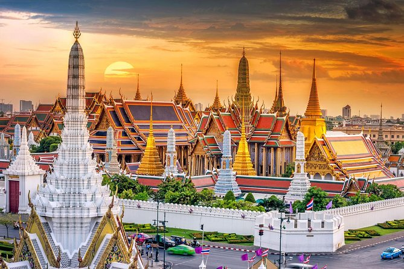
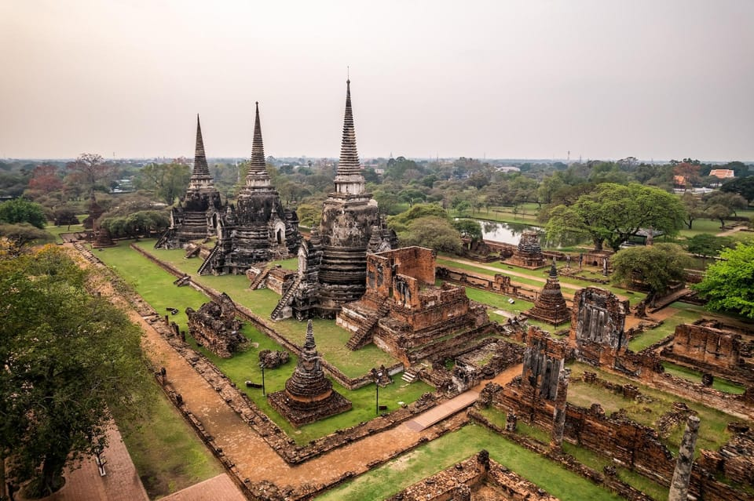
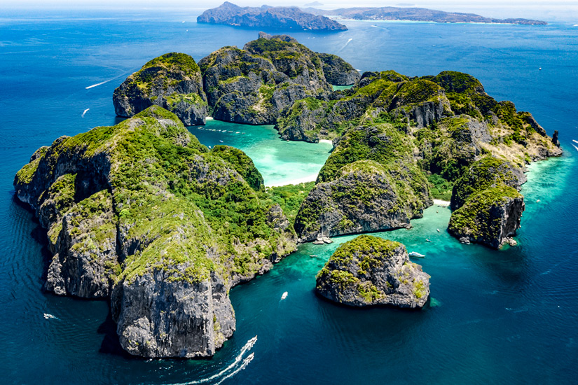
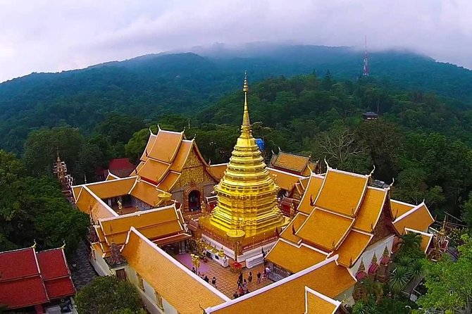
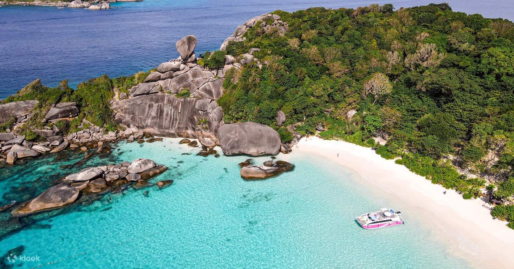

Die wichtigsten Sehenswürdigkeiten in Thailand
Thailand bietet zahlreiche beeindruckende Sehenswürdigkeiten, die von der Kultur, der Natur und der Geschichte des Landes erzählen. Von den majestätischen Tempeln bis hin zu atemberaubenden Naturwundern gibt es viel zu entdecken!
Top 5 Sehenswürdigkeiten in Thailand
| Sehenswürdigkeit | Bild | Beschreibung |
|---|---|---|
| Wat Phra Kaew & Grand Palace |  |
Der Tempel des Smaragd-Buddha und der Grand Palace in Bangkok sind die wichtigsten religiösen und königlichen Stätten des Landes. |
| Ayutthaya |  |
Die alte Hauptstadt Thailands, bekannt für ihre Ruinen und historischen Tempel, die von der UNESCO zum Weltkulturerbe erklärt wurden. |
| Phi Phi Inseln |  |
Die Phi Phi Inseln sind berühmt für ihre atemberaubenden Strände, kristallklares Wasser und dramatische Felsen. |
| Chiang Mai & Doi Suthep Tempel |  |
Der Doi Suthep Tempel bietet einen spektakulären Blick über Chiang Mai und ist ein bedeutendes spirituelles Ziel für die Einheimischen. |
| Similan Islands |  |
Ein Inselparadies im Andamanischen Meer, bekannt für seine außergewöhnliche Unterwasserwelt und spektakulären Tauchmöglichkeiten. |